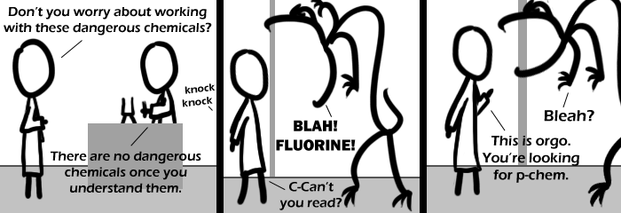

Comic JK 458
When I Feel Like It
⇤
<
?
>
⇥

⇤
<
?
>
⇥
Forum
.
RSS
.
Digg
.
Facebook
.
Reddit
.
Twitter
.
Stumbleupon
Enter your thoughts on number 458 here. Please, spam, troll, or phreak. Hmm, Chem major here and I don't get this... >Yeah, I'm a dick too... >>Organic vs. physical chemistry - there's not much call for fluorine in the former. >>>There can't be lots of fluorine in organic chemistry. It's just not good news >>>>Makes the orgasms go "blah". I got it, but it's not funny. >The Alt-text is funnier... your best As simple as it makes me seem, I liked the title-text. >I liked it too, don't feel alone. >Hey Hey Hey >>touche >>>Tou? >>>> agh, ntf-8 users. Evil! D: Ha, I it. Mainly just my old chem teacher constantly talked about how "tough" fluorine was. YES FLUORINE IT'S THE STRONGEST EVER Someone explain to an idiot what Fluorine does to organic creatures? >I'm not sure about fluorine itself (other than it kills you somehow, probably similarly to chlorine by acidifying your lungs and drowning you), but hydrofluoric acid melts your bones. From what I remember about fluorine chemistry, there's some serious firepower in fluorine: my old professor once said that you can tell how long a fluorine chemist has been in the business by how many fingers he's missing. It's fun stuff. nsa